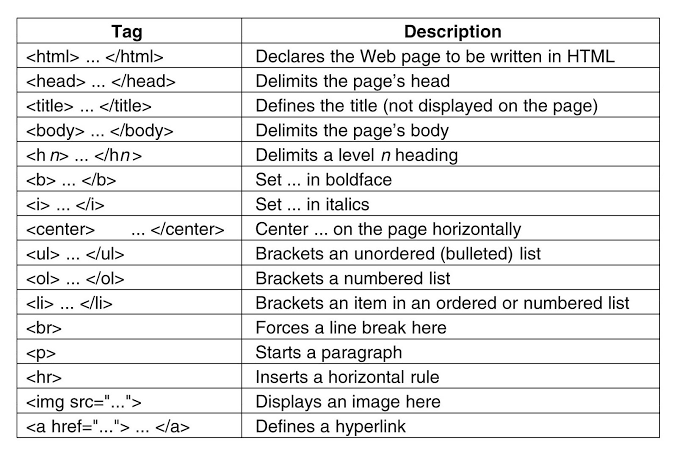
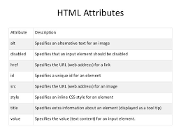
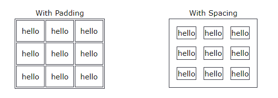
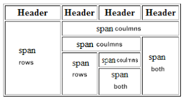
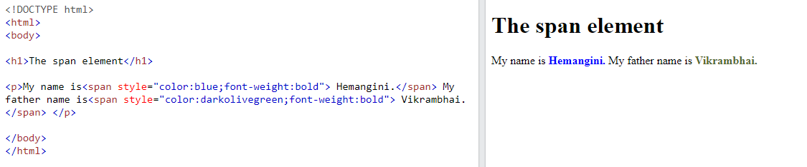

1. Are the HTML tags and elements the same thing?
html tags are used to mark up the start/opening and end/closing tags. tags are two type-opening and closing.
EX-this is a teg opening & closing tag.
An html Element udually consists of a start tag & end tag
.png)
2. what are tags and attributes in html?
=>HTML tags are used to hold the html element. html element holds the content.

html attributes are used to decribe the characteristic of an html element in details.

3. what are void elements in html?With Example.
=> A void element is an element whose content model never allows it have contensts under any circumstances.
void element can have attributes.
The follwing is a computer list of the void elements in html:
(area, base ,br,col, command,hr,img,track.)
4. what are html entities?With Example.
=> An html entity is a piece of text ("string") that begins with an ampersand (&) and ends wth a semicolon(;).
Example5. what are diffrent types of lists in HTML?With Example
There are three list in html
Example:-
Example:-
Example:-
6. what is the class attributes in html?With Example
=>The class attribute specific one or more classnames for an element. the class attribute is mostly used to point to a class in a style sheet. However, it can also be used by a javascript to mark changes to html element whith a specified class.
Example:-
Use of the class attribute in an HTML document:

7.What is the diffrent between the id attribute and the 'class' attribute of html element?
=>Diffrent between id and class attribute: the only diffrenc between them is that "id" is unique in a page and can only apply to most one element, while "class"selector can apply to multiple element.
8. What are the various formating tags in html
| tag | decriptione |
|---|---|
| b | defines bold text |
| big | defines big text |
| em | Defines emphasized text |
| small | Defines small text |
| strong | Defines strong text |
| sub | Defines subcripted text |
| sup | Defines superipted text |
| ins | Defines inserted text |
| del | Defines deleted text |
9.How is call padding diffrent from cell spacing?With Example.
=>Cellpandding basically defines the space present between a table cell's border and the content present in it. Cellspacing basically defrines the space present between individual adjacent cells.
10.How can we club two or more rows or colums into a single row or colums in a html table?With Example.
=>You can merge two or more table cells in a columm using the colspan in a td HTML tag(table data). To merge two or more row cells, use the rowspan attribute.
11. What is the diffrent between a block level element and an inline element?
=>Block elements always start from a new line.
Inline elements never start from a new line.
Block elements cover space from left to right as far as it can go.
Inline elements only cover the space as bounded by the tags in the HTML element.
12.How to create a hyperlink in html?
=>To make a hyperlink in a html page use the < a ></a> tags, whith are the tags used to define the link. The tag indicates where it ends. Whatever text hyperlink.add the url for the link in the a href."">
Like that:-< a href="#">Hyperlink < /a >
Hyperlink13. What is the use of an ifame tag?With Example.
=>The i frame tag specifines an inlnine iframe. an inline frame is used to embed another doument withing the current HTML doument.
14. What is use of span tag?With Example.
the span tag used follwing things.
Example:-
15. How to insert a picture into a beckground image of a web page?With Example
=>To set the backgrond image of a webpage use the css style. under the css style tag,add the property backgrond iamge. the property sets a graphic such as jps, png, svg,gif,etc,html 5 do not support the
backgrond attribute so css in used to change set background image.16. How are active links diffrent from normal links?
=>some browsers recognize an acitve link when the mouse curser is placed over that link others recognize active links when the links has the focus, those that don't have a mouse cursor over that link is cnsidered a normal link.
17. What are the different tags to separate sectione of text?
=>< br > tag - usually < br > tag is to separate the line of text. it breaks the current line and conveys the flow to the next line.
< p > tag - this contains the text in the form of a new paragraph.
< blockquote > tag–This tag is used to define large quoted sections.
18. What is SVG?
=>scalable vector graphic (SVG) are an xml-based markup language for describing two-dimensional based vector graphics.
19. What is difference between HTML and XHTML ?
=>HTML is SGML based while XHTML is XML-based. they are like two sides of the same coin. XHTML was derived from HTML to conforn to XML standers. Hence XHTML is strict when comppared to HTML and does not allow user to get away whith lapses in coding and structre.
20.what are logical and physical tags in HTML ?
=>logical tags describe the behaviour nature of of content for the text enclosed inside tha tag. they represent the functione pf text on the page physical tags are used to decide the appearance of the text and do not provied any informatio about the text.